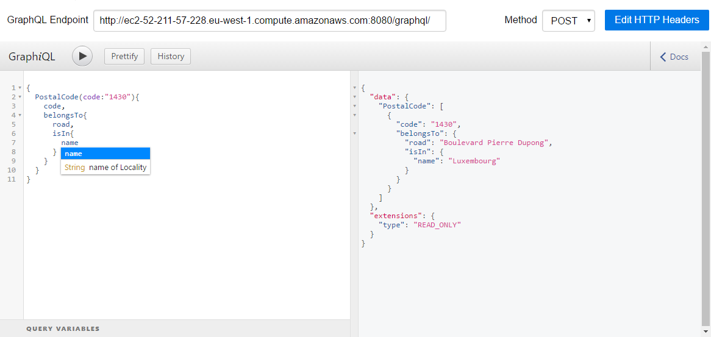

The Open Data Challenge
as seen by Crab's Hue
Game Of Code 2018
By 2025 the global datasphere will grow to 163 zettabytes.
IDC - International Data Corporation
That is a trillion of gigabytes
( = 1000000000000000000000 bytes) !
That's TEN TIMES the 16.1ZB of data generated in 2016.
( = 1000000000000000000000 bytes) !
That's TEN TIMES the 16.1ZB of data generated in 2016.
That's a lot of Hackathon ...
How can we help
people,
developers
to explore this
massive amount
of unrelated
data ?
1 - We do more than re-use
-
Step by step, new kind of relationships do appear.
-
It becomes possible to link nodes indirectly
-
New kind of requests become possible even without connected paths
Actually, we are creating new information !
the current graph has near 200 000 relationships
2 - Keep those information OPEN
- Since we create data, it should remain public
- Go discover connections and explore the graph yourself ! http://ec2-52-211-57-228.eu-west-1.compute.amazonaws.com:8080/graphql/ 
We published a common interface to access the connected data through a standard query language: GraphQL
3 - Make those information accessible to everyone
- Currently, people have to know what is available before actually start searching
- There is so much data available that people could/should know
- We provide this data through the most natural query language: voice
- Let's see what people find out ...